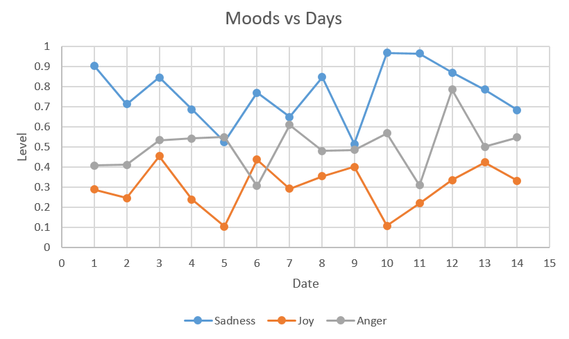

<!--
  Generated template for the ChartsPage page.

  See http://ionicframework.com/docs/components/#navigation for more info on
  Ionic pages and navigation.
-->
<ion-header>

  <ion-navbar>
    <ion-title>Recommendations</ion-title>
  </ion-navbar>

</ion-header>


<ion-content padding text-center>
  <!-- <h3>Recommendations</h3> -->
  <ion-list text-center>
    
    <!-- <hr> -->


    <!-- <ion-item> -->
        
    <button ion-button block>Talk to a therapist</button>
    <hr>
    <!-- </ion-item> -->
    <!-- <ion-item> -->
      
        
    <button ion-button block>Speak with a support group</button>
    <!-- </ion-item> -->

    <!-- <button ion-button block>Watch some recommended shows on Netflix</button> -->

    <ion-card>
        <ion-card-content>
            
        </ion-card-content>
      </ion-card>
  </ion-list>

</ion-content>

<ion-footer text-center>
  <p>
    Available Credits: 30
  </p>
</ion-footer>